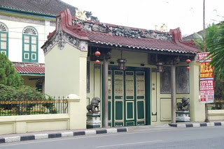
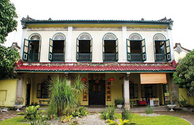
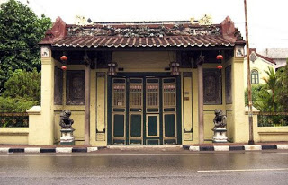
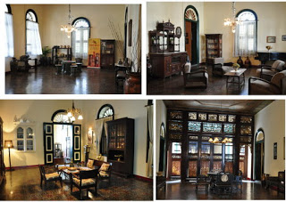

Rumah Tjong A Fie atau Tjong A Fie Memorial Institute terletak di Jln. Jendral Ahmad Yani (Kesawan). Kesawan merupakan sebuah kawasan yang dipenuhi banyak bangunan-bangunan bersejarah dan Jalan Ahmad Yani adalah jalan yang tertua di kota Medan.

Di Rumah Tjong A Fie saat ini, pengunjung dapat mengetahui sejarah dari kehidupan seorang Tjong A Fie melewati foto-foto, lukisan beserta perabotan rumah yang digunakan oleh keluarganya dan juga dapat mempelajari budaya Melayu-Tionghoa.

Rumah Tjong A Fie didirikan pada tahun 1900, yang saat ini menjadi Tjong A Fie Memorial Institute dan juga dikenal dengan nama Tjong A Fie Mansion. Rumah ini dibuka untuk umum pada tanggal 18 Juni 2009 untuk memperingati ulang tahun Tjong A Fie yang ke-150.

Rumah ini merupakan sebuah bangunan yang memiliki desain dengan gaya arstitektur Tionghoa, Eropa, Melayu dan art-deco yang sekarang menjadi sebuah objek wisata bersejarah di Medan.

Rumah Tjong A Fie adalah salah satu objek wisata bangunan bersejarah yang ada di Pulau Sumatera lebih tepatnya Propinsi Sumatera Utara kota Medan yang menarik karena rumah ini memiliki banyak sekali motif yang sedikit banyak juga menggambarkan pemiliknya terdahulu yaitu Tjong A Fie, jika di lihat dari gaya rumahnya yang memiliki Desain campuran sangat sesuai dengan karakteristik seorang Tjong A Fie.
Rumah Tjong A Fie
Jalan Jendral Ahmad Yani(Kesawan)